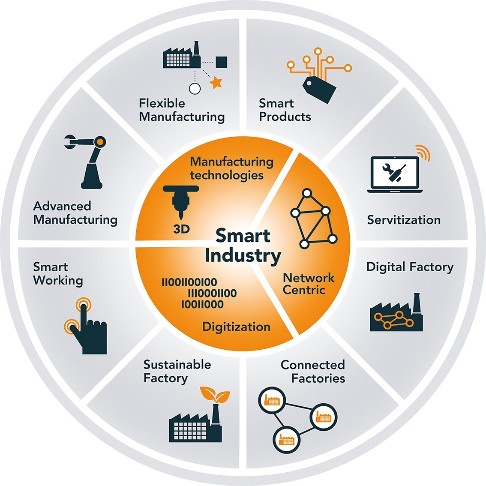

Welkom bij de portfolio van Roel! Op deze site kunt u alle werkzaamheden vinden die het afgelopen jaar zijn uitgevoerd met betrekking tot de minor Smart Industry aan de HAN in Nijmegen.
Smart Industry is een cruciale ontwikkeling voor de industrie. Het is dé basis voor het versterken van onze toekomstige welvaart en concurrentiekracht alsmede het leveren van oplossingen van maatschappelijke vraagstukken. Het gaat daarbij om het realiseren van economische en maatschappelijke meerwaarde. Economische meerwaarde in de vorm van het verhogen van de productiviteit en toegevoegde waarde van bedrijven, het behouden en creëren van nieuwe werkgelegenheid en gezonde winsten voor ondernemers. Maar het gaat ook over maatschappelijke meerwaarde zoals verminderen van grondstoffen en het verbruik van energie, het produceren van de nodige producten voor duurzame energie, betaalbare medische hulpmiddelen, veilig, duurzaam en betrouwbare mobiliteit, etc.
Smart Industry wordt gedreven door de versnelling van de digitalisering van de industrie. Het gaat ook over een systeemverandering met vergaande gevolgen. Internationaal spreekt men over de vierde industriële revolutie Gedreven door technische ontwikkelingen in de ICT als Internet of Things (IoT), 5G, blockchain, big data, kunstmatige intelligentie (AI: artificial intelligence). Wereldwijd probeert ieder geïndustrialiseerd land haar hele industrie en in het bijzonder het MKB te stimuleren tot het versnellen van investeringen in nieuwe technologie.

Voor de Smart Industry is er binnen Nederland een Smart Industry wiel ontworpen waarin zichtbaar is op welke gebieden Smart Industry verbeterd kan worden binnen een bedrijf. Zo zie je dat de Smart Industry uit 3 verschillende kerngroepen bestaat, dit vormt de basis van het wiel en dus de basis van Smart Industry. Deze kerngroepen zijn op hun beurt weer opgedeeld in subgroepen, deze subgroepen zijn belangrijk om als bedrijf verbetering op het gebied van Smart Industry te kunnen maken. Kortom is het wiel ervoor bedoeld om aan de hand van de kern- en subgroepen een goed digitaal verbonden productienetwerk op te bouwen om hiermee goed te kunnen ontwerpen, produceren en leveren van slimme producten en bijhorende diensten. Waarbij ook een dusdanige energie- en materiaalbesparing in de productie en levensduur zichtbaar is, ook kunnen werknemers aan de hand van dit model continue hun kennis op peil houden.
Door gebruik te maken van een SWOT-analyse ben ik mezelf gaan uitpluizen om aan de hand van deze analyse een leerdoel op te stellen. Ik heb hiervoor de SWOT-analyse in 2en opgesplitst zodat ik zowel een persoonlijk leerdoel als een minor technisch leerdoel heb. Onderstaand mijn sterktes, zwaktes, bedreigingen en kansen uitgewerkt in een afbeelding en daarbij de toelichting van het ontstane leerdoel a.d.h.v. de SWOT-analyses.
Leerdoel Persoonlijk
Kennis op doen op het gebied van Business.
Motivatie
Smart Industry is momenteel een zeer opkomende verandering
binnen mijn opleiding van de Automatisering, vandaar mijn interesse voor deze
minor. Ik kan op deze manier wat nieuwe technieken leren over bijvoorbeeld
3D-printen en daarnaast kennis opdoen over het business gedeelte en dit in
combinatie met techniek. Dit is voor mij de perfecte combinatie. De reden dat
ik wat meer wil weten over business is dat het voor mij met het oog op de
toekomst wel een stukje informatie is wat iedere werknemer binnen een bedrijf
wel moet hebben. Zo zal ik de eerste jaren na mijn opleiding vooral bezig zijn
met het programmeren van software, maar over een x aantal jaren lijkt een wat
meer aansturende functie ook zeer interessant. Ik denk dat deze business
informatie daarvoor heel handig is omdat je dan een bepaalde situatie niet
alleen vanuit een technisch oogpunt kunt bekijken, maar ook wat meer vanuit de
business kant. Ik denk persoonlijk dat dit zeer handig is en goed om deze skill
te bezitten.
Reflectie
Aan de hand van het vak Smart Business hebben we een aantal
gastsprekers gehad die ons bijv. een aantal analyse technieken hebben voorgeld,
ook vertelden zij hoe dit allemaal geregeld is binnen het bedrijf waar zij
werkzaam zijn. Het is zeer leerzaam om les te krijgen van iemand die letterlijk
zelf werkzaam is in dit gebied, zo leer je precies hoe het er in het werkveld
aan toe gaat. De technieken die wij geleerd hebben waren voor mij nog vrijwel
onbekend, maar na navraag aan bekenden in de techniek toch wel methodes die ze
veel terugzien komen in het werkveld. Ook bij technische bedrijven worden deze
methodes veel toegepast en dus is het voor mij heel erg goed dat ik er op deze
manier kennis mee heb kunnen maken. Al
met al denk ik dat ik de basis van de business wel gezien heb nu en heb het al
interessant ervaren, nu is het aan mij om verder te ontplooien wat er nog meer
allemaal mogelijk is binnen business. Ik vond het een zeer geslaagde minor
omdat ik veel te weten ben gekomen over business.
Leerdoel Persoonlijk
Mezelf wat meer laten horen tijdens een project.
Motivatie
Ik ben vrij stil en kijk vaak de kat uit de boom als je al
groep ergens mee bezig bent, dit is in eerste instantie niet per se een
probleem. Toch ben ik van menig dat het goed is als iemand veel initiatief
toont en een manier om dit te doen is door veel van jezelf te laten horen. Dit
toont dat je meedenkend bent en er alles aan doet om te helpen, op welke manier
dan ook. Ik heb dit in mijn eerste stage ervaren en heb dit toen ook gelijk als
leerdoel meegenomen. Omdat deze minor voor een groot deel uit een
bedrijfsproject bestaan, denk ik dat ik hier de mogelijkheid wel ga krijgen om
mezelf hierin te verbeteren. Dit is dan ook het voornaamste doel voor mij
tijdens het bedrijfsproject, buiten het feit dat je natuurlijk gewoon een goed
eindproduct wil leveren.
Reflectie
Ik denk dat ik met kleine stapjes vooruit ga en steeds meer
en meer mijn zegje durf te doen. Ik merk ook dat het vooral bij vraagstukken
over bekende informatie voor mij makkelijker is om mijn mond los te trekken dan
bij relatief onbekendere informatie. Ik heb ervaren dat ik het ook fijn vind
als je met jouw inspraak een bepaald probleem op kunt lossen en dit geeft een
fijn gevoel. Dit is zeker een stap de goede richting op en daar ben ik blij
mee. Daarnaast ben ik mezelf er ook van bewust dat dit niet zomaar in een half
jaar volledig opgelost kan zijn, maar daarom ben ik stap voor stap naar mijn
einddoel te werken. Zo ga ik aankomend halfjaar mijn afstudeerstage lopen en is
dit een mooi doel om ook weer mee te nemen en hier mogelijk weer een volgende
stap in te zitten. Al met al ben ik tevreden met de progressie van dit
leerdoel.
Reflectie Jeroen
Roel is wel een wat stillere jongen, dit merk je wel bij
bijvoorbeeld vergaderingen dat hij minder snel het woord neemt. Toch hebben we
hem hier af en toe tot gedwongen om hem ervaring op te laten doen en zich
hierin te kunnen verbeteren. Verder is hij wel een gedreven jongen en ook
nuttig in te zetten in teamverband. Ik vind het mooi dat Roel dit als persoonlijk
leerdoel heeft ingevuld want hier valt voor hem nog wel wat te halen, en ik
hoop dat wij daar in het afgelopen project ons steentje aan bij hebben kunnen
dragen.
In onderstaand schema is een SWOT-analyse te vinden van van den Broek Systemen op het gebied van Smart Industry. Hierin worden verschillende slimme technieken gekoppeld aan bestaande of mogelijke smart items binnen het bedrijf. Deze SWOT-analyse is opgesteld door onze projectgroep om te kijken hoe Van de Broek ervoor staat betreft Smart Industry en waar dus de bedreigingen en kansen liggen voor dit bedrijf.Een uitgebreide toelichting op deze SWOT-analyse is via onderstaande link te bereiken:
Bij Smart Research heb ik geleerd hoe je een onderzoek uit kunt voeren dat zowel relevant is als haalbaar, dit is iets wat ik nooit echt op school geleerd heb. Toch is het van belang dat je de onderzoeksvraag goed kiest, zodat dit op gaat leveren wat je ervan verwacht. In sprint 1 hebben we geleerd hoe je dit aan de hand van 6 parameters kunt doen: Scope, Onderzoekbaar, Uitvoerbaar, Specifiek, Complexiteit en Relevantie. Dit was de eerste keer dat ik een onderzoeksvraag op deze manier ging bekijken en dit was ook wel te zien, zo scoorde mijn eerste onderzoeksvraag respectievelijk(op schaal van 1 tot 6) bij mijn medestudenten: 2, 5, 4, 2, 1, 3. Dit zou een deelvraag geweest kunnen zijn dit ik normaliter uitgewerkt had in een onderzoek, hierbij had ik deze analyse niet uitgevoerd. Zo zie je maar wat het nut is van deze techniek. Ik denk dat deze analyse van cruciaal belang is om je onderzoek zowel de juiste diepgang als de nodige relevantie te voorzien. Zo is mijn uiteindelijke score geworden: 4, 5, 4, 4, 3, 5. De deelvraag die uiteindelijk de basis van mijn onderzoek is geweest luidt: “ Welke drone kan het best worden ingezet om de beveiliging van een MKB bedrijventerrein te verbeteren met behulp van autonoom vliegen? “. Zie hieronder het linkje naar mijn onderzoek.
Onderzoek DronesDe communcicatie tussen onze projectgroep en Van den Broek heeft plaatsgevonden door middel van een PDCA cyclus. PDCA staat voor 'Plan-Do-Check-Act'
Uit de opgestelde vragenlijst blijkt dat de communicatie zeer succesvol is geweest. Hieruit kunnen we concluderen dat, mede door de organisatiestructuur die we hebben gehanteerd, de communicatie naar verschillende doelgroepen succesvol is geweest. Dit kwam mede door het proces waarbij Roderik ons in contact brengt met interne kennisdragers. Zodat wij vervolgens direct contact kunnen leggen met deze personen.
Daarnaast hebben wij ook buiten de organisatie gezocht naar kennisdragers. In dit geval was dit Vliegend.nl en UgCS. Hiervan was Vliegend.nl interessant voor Roderik vanwege de kennis over volledig automatische dronevluchten. Bij dit proces brachten wij Roderik in contact met Vliegend.nl.
Ook was er contact met de stakeholder HAN. Deze nodigde we eens per 2 weken uit om onze algehele progressie te bespreken. Deze stakeholder was ook geïnteresseerd in het business gedeelte van de opdracht. Aan de hand van een overleg met deze stakeholder, hebben we besloten om het business aspect te integreren in de vorm van het Target Operating Model.
De onderstaande organisatiestructuur werd gehanteerd:
Onderstaand de linkjes naar de vragenlijst betreffende de communicatie die is voorgelegd bij de bedrijfsbegeleider en de toelichting op onze communicatie d.m.v. PDCA:
Vragenlijst Communicatie Toelichting communicatie